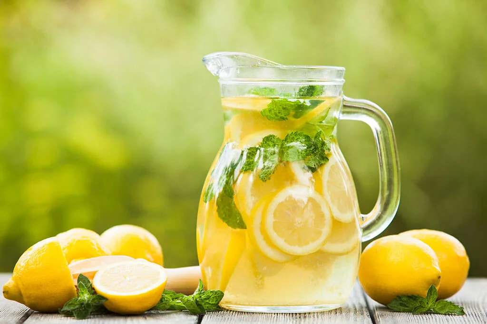

El jugo de limon es delicioso y refrescante. lo escogi porque me gusta mucho, es delicioso,
refrescante y facil de hacer.

Ingredientes:
6 limones
6 cucharaditas de azúcar (opcional)
6 tazas (1,5 litros) de agua
Pasos:
Corta los limones por la mitad a lo largo con un cuchillo afilado.
Exprime el jugo de limón en un bol si lo preparas a mano.
Utiliza un exprimidor de cítricos como alternativa. Coloca el limón en un exprimidor eléctrico si no te
importa la pulpa en el jugo
Añade agua y azúcar al jugo y vatelo.
Viértelo en un recipiente y agregale hielo (opcional).
Esta receta fue copiada de la página https://www.lacocinadelila.com/limona...